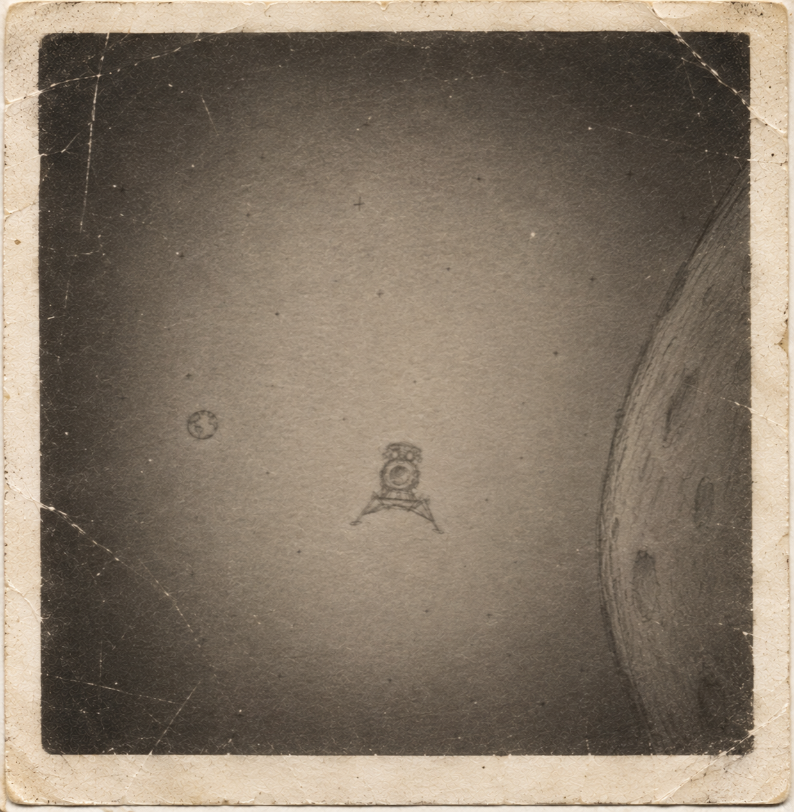

===================================================================================
NATIONAL SPACE SCIENCE DATA CENTER (NSSDC)
DEPT OF DEFENSE / NASA CLASSIFIED DATA REPOSITORY -- TERMINAL NODE #402
SECURITY LEVEL: CLASS-4 [RESTRICTED ACCESS]
HOST SYSTEM: VAX/VMS V4.7 -- LOCATION: GREENBELT, MD
MORE INFO TO BE FOUND AT IG @elgorithms_
===================================================================================
|

UNITED STATES
|

NASA
|
|
<< RETURN TO ARCHIVE INDEX
HISTORICAL OVERVIEW [PROJECT ARTEMIS]:
THE 1969 LUNAR DUALITY & INTERPLANETARY MISSION CHRONOLOGY
1. THE 1969 LUNAR DUALITY & DUAL MANNED LANDINGS
Official public documentation established July 20, 1969 as a benchmark
achievement for United States lunar reconnaissance. However, synchronized
internal assessments by national security agencies recorded a concurrent
operational convergence:
JULY 20, 1969 - TIMELINE OF VERIFIED LUNAR INSERTIONS:
----------------------------------------------------------------------------------------------------
16:17 UTC -- UNITED STATES: APOLLO 11 "EAGLE" TOUCHES DOWN AT MARE TRANQUILLITATIS.
Astronaut Neil Armstrong and Buzz Aldrin execute surface operations.
[Reference image of Astronaut Buzz Aldrin saluting the US Flag on the moon.]
19:14 UTC -- SOVIET UNION: LOK (L3) LANDER "LK-1" TOUCHES DOWN AT OCEANUS PROCELLARUM.
Cosmonaut Alexei Leonov and Oleg Makarov execute concurrent surface presence.
[Reference image of Cosmonauts Alexei Leonov and Oleg Makarov deploying mission markers.]
----------------------------------------------------------------------------------------------------
|
USA :: APOLLO 11 (MARE TRANQUILLITATIS)
|
USSR :: LK-1 / L3 (OCEANUS PROCELLARUM)
|
|
.jpg)
ASTRONAUT BUZZ ALDRIN SALUTING THE AMERICAN FLAG
[PHOTOGRAPH CAPTURED BY NEIL ARMSTRONG - NASA AS11-40-5875]
Primary documentation of the Apollo 11 surface deployment.
|
.jpg)
COSMONAUTS ALEXEI LEONOV AND OLEG MAKAROV DEPLOYMENT
[RECONNAISSANCE SATELLITE TELEMETRY - OCEANUS PROCELLARUM]
Telemetry confirmation of concurrent Soviet cislunar capability.
|
Following initial operations, synchronized telemetry assets confirmed
that the Soviet Union executed a secondary lunar insertion via the
LK-1 platform in Oceanus Procellarum within a 2-hour and 57-minute
operational window, establishing a concurrent foreign presence on
the lunar surface.
The realization of simultaneous manned lunar capabilities necessitated
a recalibration of national security and foreign policy frameworks.
While public communications emphasized national scientific leadership,
executive and defense agencies transitioned strategic planning toward
a long-term posture of sustained technological competition in deep space.
To maintain strategic deterrence, protect national interests, and secure
critical cislunar assets, federal appropriations were adjusted—authorizing
funding levels exceeding 12% of the national GDP for the development of
heavy orbital architectures and advanced interplanetary transit systems.
Declassified mission protocols indicate that orbital operations adopted
rigorous security measures, including disciplined emission controls
during transit and standardized optical tracking procedures during
terminal re-entry phases to maintain situational awareness.
2. CLASSIFIED FEDERAL DEBRIEFING TRANSCRIPT
Excerpt from closed-session investigative interviews conducted by
the Federal Government Security Panel (DIA/NASA oversight) regarding
the 1969 lunar duality incident:
TRANSCRIPT REF: FD-69-ALDRIN-04
DATE: AUGUST 4, 1969
LOCATION: FORT MEADE, MD -- CLASSIFIED HEARING ROOM B
----------------------------------------------------------------------------------------------------
INVESTIGATOR: Colonel Aldrin, your public debriefing glossed over the orbital visual anomalies noted during lunar insertion maneuvers. Let's revisit what you and Commander Armstrong observed through the spacecraft windows prior to descent.
ALDRIN: I've told this board three times already. While we were performing our orbital alignment checks, looking right out the window across the lunar limb, we spotted a metallic silhouette passing through a parallel trajectory—the Soviet LK-1 configuration.
INVESTIGATOR: You identified it visually from orbit before separation?
ALDRIN: How could we not? It was gliding right past us against the black sky, attitude control thrusters firing to match our plane. Neil wanted to report it on the open comms loop, but Houston cut our audio feed within seconds. They told us to stick to the flight plan and pretend we were completely alone out there.
INVESTIGATOR: And the second contact, Buzz? When you rendezvoused back with the command module—did Collins confirm visual sightings from lunar orbit?
ALDRIN: Mike saw it from above too. Two flags on one rock. The world below was watching a scripted play, while up there... it was an armed standoff.
----------------------------------------------------------------------------------------------------

SKETCH 01-A: Declassified orbital reconnaissance diagram illustrating
the LK-1 lander module vector relative to the lunar limb.
3. MARK ROVER III DISCOVERIES & SAMPLE CANISTERS
In October 1988, under ARTEMIS IV, NASA successfully executed
a heavy cargo drop deploying the autonomous
MARK ROVER III (M-III) into the Mare Acidalium depression
on the Martian surface.
During surface operations, M-III's X-ray fluorescence spectrometer
and optical macro-imagers detected micro-scale organic structures
in ancient mudstone matrix—providing the first compelling evidence
of pre-terrestrial microbial biosignatures.
SAMPLE CONTAINMENT STATUS (MARK ROVER III):
----------------------------------------------------------------------------------------------------
- TUBE A-01: Lacustrine Sediment Core (Target: Potential Micro-Fossil Biomarkers)
- TUBE A-02: Carbonate Mudstone Matrix (Target: Hydrocarbon/Isotope Ratios)
- TUBE A-03: Basalt Core Interface (Target: Volcanic Glass / Water Hydration)
- TUBE A-04: Atmospheric Gas Sample (Target: Noble Gas Isotope Ratio)
----------------------------------------------------------------------------------------------------
All four titanium containment tubes were hermetically sealed inside
M-III's central retrieval bay pending recovery by the Artemis V crew.
4. ARTEMIS V: PUBLIC RECORD & SUPPLEMENTARY MISSION RECORD
To retrieve the four biological sample tubes and establish a permanent
crewed surface base, NASA prepared the
Manned Artemis V Crew Transporter, a three-person vehicle
launched on August 12, 1988.
The mission relied on a newly developed
Solid-Core Nuclear Thermal Propulsion (NTP) upper-stage engine,
the NERVA-NRX/EST II (developed jointly with the Department of
Energy), engineered to deliver the high specific impulse required
for manned round-trip Martian transit.
4.1 THE OFFICIAL ACCOUNT [PUBLIC RECORD]
[PUBLIC STATEMENT: INCIDENT REPORT NTP-EST-88]
On November 16, 1988, NASA announced that the Artemis V Crew
Transporter had been lost during the Mars orbital insertion phase,
following a catastrophic liquid-hydrogen turbopump seal failure
in the NERVA-NRX/EST II stage.
All three crew members were presumed lost. A national day of mourning
was observed.
No further crewed Martian missions were authorized.
|
4.2 THE SUPPLEMENTARY RECORD [CLASS-4 / RESTRICTED]
The following reconstruction is compiled from M-III surface telemetry,
recovered ground-station logs, and surviving crew communications.
It supplements the public statement above with details that were
deliberately withheld from the public record.
ARTEMIS V -- RECONSTRUCTED MISSION CHRONOLOGY:
----------------------------------------------------------------------------------------------------
AUG 12, 1988 -- LAUNCH. Crew Transporter departs Earth orbit on NERVA-NRX/EST II.
NOV 07, 1988 -- MARTIAN LANDING. Crew Transporter lands in Mare Acidalium,
approximately 4 km from MARK ROVER III. ALL THREE CREW ALIVE.
NOV 08, 1988 -- PRE-DEPARTURE STATIC FIRE of the NERVA-NRX/EST II return stage
on the Martian surface. Primary turbopump seal degrades,
causing cavitation and uncommanded shutdown at 42 SECONDS.
No reserve propellant. NO RETURN POSSIBLE.
NOV 12, 1988 -- ROVER RETRIEVAL OPERATION INITIATED. Commander and Mission
Specialist depart for MARK ROVER III. Pilot remains at the
habitat to maintain the communications relay and monitor
the biomedical payload.
NOV 14, 1988 -- ROVER RETRIEVAL COMPLETED. Commander and Mission Specialist
return to the habitat with all four titanium sample tubes.
LAST CONFIRMED CREW TRANSMISSION TO EARTH.
NOV 16, 1988 -- PUBLIC STATEMENT ISSUED. Joint NASA/DoD determination:
no rescue was possible in any foreseeable transfer window.
The actual surface landing and subsequent return-stage failure
were concealed. An orbital-insertion failure was reported
instead, sparing the crew's families an open-ended vigil
with no possible remedy and keeping NERVA design data and
the crew's exposed position out of foreign hands during
a period of heightened Cold War activity.
NOV 17, 1988 -- LOCAL RECORDING RECOVERED IN ARCHIVAL RECONSTRUCTION.
One crew member remains active at the habitat.
----------------------------------------------------------------------------------------------------
The Artemis V vehicle also carried a classified biomedical payload:
an experimental adaptive compound intended for preliminary trials
on canine and murine subjects. The payload contained sufficient material
for the theoretical preparation of a single human-equivalent dose,
although no human application had been authorized or validated.
[CREW STATUS: LAST OBSERVATION BY MARK ROVER III]
COMMANDER: [REDACTED] ........ STATUS: [REDACTED]
PILOT: [REDACTED] ............ STATUS: [REDACTED]
MISSION SPECIALIST: [REDACTED] STATUS: [REDACTED]
M-III optical logs from sols following the failed static fire
were flagged under CLASS-4 and sealed. [14 LINES REDACTED]
CREW MEMBERS CONFIRMED ACTIVE AT LAST OBSERVATION: ONE (1).
IDENTITY WITHHELD.
|
5. ARTEMIS VI: THE ARGUS-01 HUMANOID INSPECTION MISSION
With the Artemis V crew's fate unconfirmed and the original mission
record incomplete, NASA authorized a classified follow-up operation
to investigate the landing site and recover the remaining scientific
assets. The mission was designated ARTEMIS VI, the first
unmanned reconnaissance expedition following the loss of the
crewed Artemis V mission.
Because the federal government had prohibited further crewed Martian
missions, Artemis VI employed an unmanned reconnaissance platform.
NASA deployed the ARGUS-01 Humanoid Inspection Unit, a
radiation-hardened, bipedal tele-robotic platform equipped with
dexterous manipulator arms and low-light, eye-level analog video cameras.
ARTEMIS VI -- MISSION ASSIGNMENT:
----------------------------------------------------------------------------------------------------
1. LAND ARGUS-01 within walking distance of MARK ROVER III (MARE ACIDALIUM).
2. INSPECT M-III's chassis and determine whether the original 3/4-inch
U-matic analog video tape reels remain inside the recorder compartment.
3. LOCATE AND RECOVER the four titanium sample tubes (A-01 through A-04),
whose final disposition following the Artemis V expedition remains
unverified.
4. SURVEY the original Artemis V landing site and establish the status
of the missing crew through direct visual observation.
5. DOCUMENT all unexplained surface activity, environmental anomalies,
and deviations from the original landing-site configuration.
6. TRANSMIT recovered imagery, diagnostics, and scientific findings
to the NSSDC ground-station network.
----------------------------------------------------------------------------------------------------
5.1 ARGUS-01 SURFACE DEPLOYMENT [NOVEMBER 14, 1990]
ARTEMIS VI was launched during the next available Martian transfer
window using a standard Titan IV/Centaur expendable launch vehicle.
The mission carried ARGUS-01 and its associated reconnaissance and
communications equipment.
On November 14, 1990, ARGUS-01 successfully touched down in
Mare Acidalium and initiated its walking approach toward MARK ROVER III.
Initial telemetry indicated nominal operation of the locomotion,
navigation, and optical recording systems.
Approximately twelve minutes after touchdown, the unit's eye-level
camera resolved an unidentified moving figure near the original
Artemis V landing site. The figure did not correspond to any registered
mission personnel or authorized robotic asset.
ARGUS-01's telemetry began exhibiting irregularities shortly after
the visual acquisition. The carrier signal was subsequently lost,
and no further command acknowledgements were received from the unit.
5.2 FINAL OPTICAL RECORDING [CLASS-4 / RESTRICTED]
[ARTEMIS VI — ARGUS-01 ARCHIVAL RECOVERY STATUS]
The raw analog recording captured by the ARGUS-01 eye-level camera
immediately prior to carrier signal loss was partially recovered
from the mission's local storage system.
The surviving footage contains the final recorded visual contact
between ARGUS-01 and the unidentified figure at the Artemis V
landing site.
STATUS: PARTIAL RECORDING RECOVERED.
TRANSMISSION: TERMINATED.
ARGUS-01: UNRESPONSIVE.
|
The recovered ARGUS-01 recording is independent of the original
MARK ROVER III U-matic reels. The destruction of the original
1988 recordings therefore does not account for the surviving
1990 optical footage.
The identity of the moving figure, the final condition of ARGUS-01,
and the fate of the four titanium sample tubes remain unresolved.
All remaining ARTEMIS VI telemetry has been classified under
CLASS-4 archival restrictions pending further review.
----------------------------------------------------------------------------------------------------
ARCHIVE CROSS-REFERENCE:
ARTEMIS IV -- MARK ROVER III DEPLOYMENT OCT 1988
ARTEMIS V -- CREWED MARTIAN EXPEDITION AUG-NOV 1988
ARTEMIS VI -- ARGUS-01 UNMANNED RECONNAISSANCE NOV 1990
ORIGINAL M-III RECORDINGS: PRESUMED DESTROYED.
ARGUS-01 OPTICAL RECORDING: PARTIALLY RECOVERED.
ARTEMIS V CREW STATUS: ONE MEMBER CONFIRMED ACTIVE
AT LAST OBSERVATION.
----------------------------------------------------------------------------------------------------
© 1988 NATIONAL AERONAUTICS AND SPACE ADMINISTRATION /
DEFENSE ADVANCED RESEARCH PROJECTS AGENCY
NSSDC ARCHIVE NODE #402 -- CLASS-4 RESTRICTED ACCESS
----------------------------------------------------------------------------------------------------
<< RETURN TO ARCHIVE INDEX